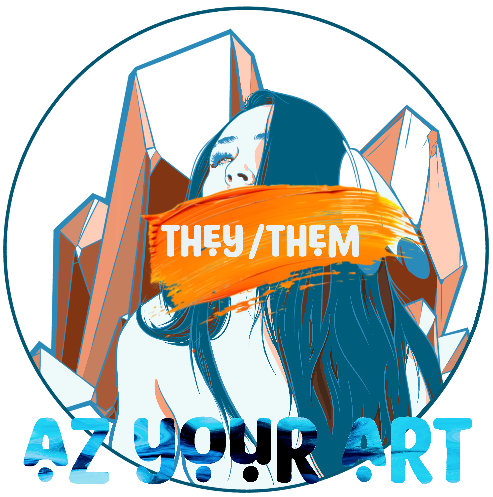
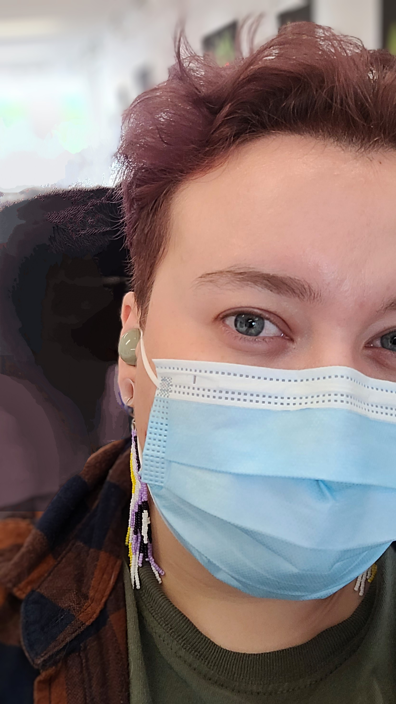

Afro-Inidgenous Owned, Toronto-based Freelance Digital Artist & Beader

ᓂᒻᐹᑳᓂᓯ | (roughly translates to "I live differently" in Anishinaabemowin)
Boozhoo, Tansi, Shé;kon, Atelihai!
My name is Kaleb Garnier-Wells. I'm a non-binary, mixed-Indigenous youth (26), with ancestry from the Wabanaki Confederacy (Quebec), Europe, and West Africa. I was born and raised in Toronto, and I describe myself as a "racial mutt" (lovingly, of course).
I graduated from the University of Guelph-Humber with a Bachelor's degree in Applied Science, a certificate in Community Justice Studies, and a burning hatred of colonial-capitalism.
I’m a bit of an artistic Jack-of-all-trades! I taught myself to bead in 2023 and have been illustrating digitally since 2018. (Although, I've been able to draw essentially since I could hold a pencil.) In 2025, I started dabbling in HTML, CSS & basic UX design, designing both this webpage from scratch and creating similarly stunning graphics for Indigenous companies such as Water First and Tribal Lands.
The nickname "Azure" originated in a Discord server for autistic adults, following a bad breakup that led to the loss of my previous username. Azure Art then became "Az-your-art" because I love puns, and there are a lot of 'Azures' online!
